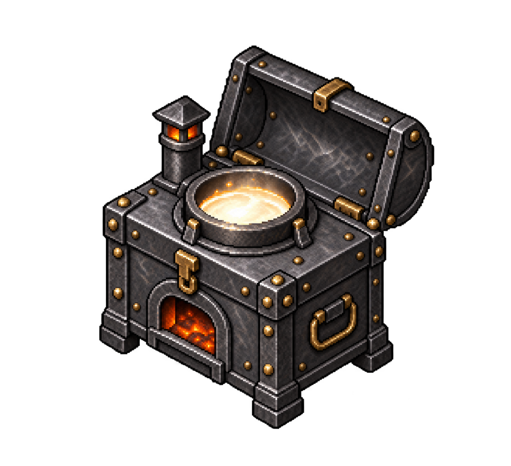
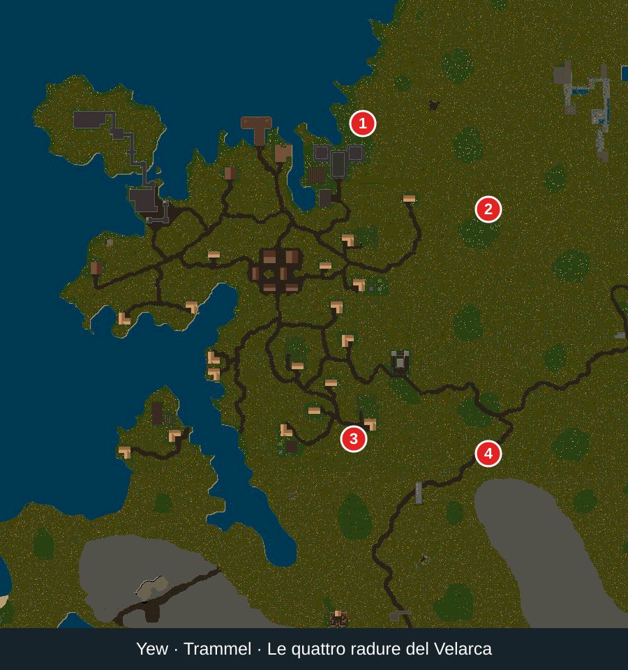

Le regole, in un posto solo.
Una guida essenziale alle funzioni attualmente presenti nello shard. Verrà aggiornata insieme al progetto.
Iniziare
Scarica l’installer dalla pagina principale di Alteria e scegli la cartella di installazione. Apri Alteria dall’icona sul desktop: il launcher scarica i file necessari al primo avvio e gli aggiornamenti successivi. Se trova un client precedente, l’installer recupera automaticamente dati di accesso salvati, impostazioni e macro.
Quando compare GIOCA, premilo per aprire il client e accedere al gioco. Il server deve essere acceso per poter entrare. Per l’account rivolgiti allo staff. Nella schermata iniziale del client puoi attivare o disattivare la musica.
.classe. Quelli amministrativi iniziano con [ e richiedono privilegi staff.Classi e skill
Le skill crescono con la pratica fino a un massimo di 100.
.skills apre il pannello classico con le 50 skill attive. .classe permette di consultare le skill principali di ciascuna classe, confrontarle con quelle possedute e classarsi quando i requisiti sono rispettati. Da lì puoi anche sclassarti, tornando Power Player.
Tre livelli di classe
Conta la media delle skill principali di base, senza bonus temporanei o degli oggetti. Sotto 75 non puoi classarti. Il livello si aggiorna automaticamente.
| Livello | Media richiesta |
|---|---|
| 1 | Da 75 a meno di 90 |
| 2 | Da 90 a meno di 100 |
| 3 | 100 |
.classe e .stato mostrano il livello. Restano i limiti fuori classe: se i requisiti non sono più rispettati, i privilegi sono sospesi finché torni idoneo. Le skill non vengono cancellate.
Come funziona il limite
Non è previsto un cap complessivo di 720. Per un personaggio classato, la somma delle skill fuori classe non può superare tre volte la media delle skill principali.
Se tutte le principali sono a 100, la media è 100 e il budget fuori classe è 300: una classe con sei principali può quindi arrivare a 900 totali; una con otto a 1.100. Il pannello mostra somma totale, budget e sforamenti in evidenza. Cambiare classe non cancella skill automaticamente; un cambio incompatibile con il budget viene rifiutato.
Power Player: può sviluppare tutte le skill previste, senza i privilegi esclusivi delle classi. Il massimo teorico delle 50 skill a 100 è 5.000.
| Classe | Skill principali |
|---|---|
| Artisan | Arms Lore, Carpentry, Lumberjacking, Mining, Tailoring, Tinkering, Blacksmithing, Bowcraft/Fletching |
| Assassin | Anatomy, Taste Identification, Fencing, Archery, Poisoning, Tracking, Hiding, Stealth |
| Ranger | Animal Lore, Animal Taming, Archery, Tactics, Tracking, Veterinary |
| Thief | Lockpicking, Hiding, Remove Trap, Stealing, Stealth, Snooping |
| Swordsman | Anatomy, Arms Lore, Healing, Parrying, Swordsmanship, Tactics |
| Paladin / Black Guard | Anatomy, Healing, Meditation, Spirit Speak, Swordsmanship, Tactics |
| Necromancer | Alchemy, Inscription, Magery, Meditation, Resisting Spells, Spirit Speak |
| Mage | Alchemy, Evaluating Intelligence, Inscription, Magery, Meditation, Resisting Spells |
| Macer | Anatomy, Arms Lore, Healing, Mace Fighting, Parrying, Tactics |
| Fencer | Anatomy, Arms Lore, Fencing, Healing, Parrying, Tactics |
| Farmer | Animal Taming, Animal Lore, Fishing, Cooking, Breeding, Farming, Veterinary, Tracking |
| Druid | Alchemy, Animal Lore, Inscription, Magery, Meditation, Resisting Spells |
| Bard | Cartography, Enticement, Hiding, Musicianship, Peacemaking, Provocation |
| Archer | Anatomy, Archery, Healing, Hiding, Arms Lore, Tactics |
Privilegi effettivi di ogni classe
La tabella descrive i vantaggi realmente attivi, non bonus programmati per il futuro. Le skill principali definiscono il percorso e il budget fuori classe: non ricevono automaticamente un bonus di efficacia o di crescita. I livelli 1–3 non aggiungono moltiplicatori generici a danni, taming o cura; per il Farmer sbloccano i bonus di allevamento, raccolta e cucina descritti sotto. I privilegi richiedono una classe attiva, con media almeno 75 e budget fuori classe rispettato.
| Classe | Magery consentita | Privilegi esclusivi attualmente attivi |
|---|---|---|
| Assassin | Fino al 8° | Nessuna abilità o maggiorazione numerica esclusiva attualmente implementata. |
| Artisan | Fino al 3° | Nessuna abilità o maggiorazione numerica esclusiva attualmente implementata. |
| Ranger | Fino al 5° | Nessuna abilità o maggiorazione numerica esclusiva attualmente implementata. Eccezione magica: può lanciare Mark del VI circolo. |
| Thief | Fino al 3° | Nessuna abilità o maggiorazione numerica esclusiva attualmente implementata. Eccezione magica: può lanciare Incognito del V circolo. |
| Swordsman | Fino al 3° | Nessuna abilità o maggiorazione numerica esclusiva attualmente implementata. |
| Paladin | Fino al 3° | Accesso alle 17 preghiere personalizzate tramite .pray, condivise con Black Guard. |
| Black Guard | Fino al 3° | Accesso alle 17 preghiere personalizzate tramite .pray, condivise con Paladin. |
| Necromancer | Fino al 6° | Accesso esclusivo a Codex Damnorum e alle sue 16 magie personalizzate. |
| Mage | Fino al 8° | Peso dei reagenti nello Zainetto di Velarca azzerato quando il Mage attivo lo porta nello zaino. Solo un Mage attivo può tentare di rubare lo zainetto (o un contenitore che lo contiene); restano i normali controlli di Stealing. |
| Macer | Fino al 3° | Nessuna abilità o maggiorazione numerica esclusiva attualmente implementata. |
| Fencer | Fino al 3° | Nessuna abilità o maggiorazione numerica esclusiva attualmente implementata. |
| Farmer | Fino al 6° | Cerchio pacificante durante il taming; +5/+10/+15 punti percentuali alla riuscita di Breeding; +10/+20/+30% di resa media Farming; sei ricette di cucina magica esclusive. Farming e Breeding di base restano utilizzabili anche senza questa classe. |
| Druid | Fino al 6° | Accesso esclusivo a Earthbook e alle sue 16 magie della Terra. |
| Bard | Fino al 3° | Accesso esclusivo al Tomo delle antiche melodie e alle sue 8 melodie; comando .play. |
| Archer | Fino al 3° | Nessuna abilità o maggiorazione numerica esclusiva attualmente implementata. |
Farmer: otto skill principali, accesso a Magery fino al VI circolo e budget fuori classe pari a tre volte la loro media: 225 con media 75, 270 con media 90, 300 con media 100. Classarsi non aumenta gli slot seguaci o la probabilità di addomesticamento: aggiunge invece i privilegi specifici descritti qui sotto. Non è necessario essere Farmer per usare Farming e Breeding di base.
Power Player: nessun budget complessivo delle skill e Magery fino all’VIII circolo; non ottiene i libri e le preghiere riservati alle classi né i privilegi del Mage sullo Zainetto di Velarca. Restano necessari skill, mana, reagenti e altri requisiti dell’azione.
Farmer: privilegi attivi
I bonus sono automatici finché la classe Farmer è attiva: valgono i normali requisiti di media e budget fuori classe. Non esiste un sistema di esperienza dei pet per questi privilegi.
| Privilegio | Livello 1 | Livello 2 | Livello 3 |
|---|---|---|---|
| Breeding: bonus alla probabilità di riuscita | +5 punti percentuali | +10 punti percentuali | +15 punti percentuali |
| Farming: resa media aggiuntiva | +10% | +20% | +30% |
| Cerchio pacificante: raggio attorno al bersaglio | 4 caselle | 5 caselle | 6 caselle |
| Cerchio pacificante: durata | 12 secondi | 15 secondi | 18 secondi |
Breeding: il bonus migliora la probabilità dell’accoppiamento, senza aumentare il valore della skill o permettere di saltare la skill minima richiesta. Per esempio una probabilità ordinaria del 40% diventa 45%, 50% o 55%. Il risultato non supera il 100%. Restano necessari una coppia valida, slot liberi e il riposo della femmina; limiti di generazione e numero di nascite restano invariati.
Farming: il bonus si applica alla quantità di ogni prodotto raccolto dalle coltivazioni del sistema Farming, compresi ortaggi, cotone e reagenti. Le frazioni sono arrotondate casualmente: la percentuale è una media su più raccolti, non un oggetto aggiuntivo garantito a ogni raccolta. Non moltiplica i semi restituiti e non modifica pesca, mining o raccolta di oggetti decorativi.
Cerchio pacificante: si attiva automaticamente quando comincia un tentativo valido di taming. Ha una ricarica di 30 secondi. Calma gli animali selvatici tamabili visibili attorno al bersaglio; esclude il bersaglio che stai tamando, i pet controllati, le evocazioni, i Paragon e le creature immuni alla pacificazione. Non interrompe lo scontro di una creatura contro un altro personaggio. La pacificazione segue le normali regole di interruzione del gioco.
Cucina magica del Farmer
Nel menu Cooking della padella trovi la categoria Cucina magica Farmer. Serve un forno, anche quello medievale del pub: girarrosto e calderone non cuociono queste torte. Ogni ricetta richiede 1 impasto dolce (Sweet Dough), 1 miele Jar Honey e 2 frutti del tipo indicato. Può prepararle soltanto un Farmer attivo del livello richiesto; gli alimenti prodotti possono essere scambiati e consumati anche dalle altre classi.
| Torta | Livello Farmer | Cooking minimo | Effetto |
|---|---|---|---|
| Pera | 1 | 75 | Visione notturna per 5 minuti |
| Banana | 1 | 75 | Recupera 15 punti vita; non cura il veleno |
| Zucca | 2 | 85 | +5 Forza per 5 minuti |
| Anguria | 2 | 85 | +5 Destrezza per 5 minuti |
| Cocco | 2 | 85 | +5 Intelligenza per 5 minuti |
| Mela | 3 | 95 | Recupera 25 punti stamina, oltre al normale ristoro del cibo |
Fra due torte magiche occorre attendere 60 secondi, indipendentemente dalla ricetta. Il personaggio deve avere fame e tenere il cibo nello zaino. I bonus alle statistiche usano il sistema magico normale: non sommano ulteriori +5 a un potenziamento già più forte della stessa statistica. La torta di banana non è consumabile mentre si è avvelenati.
Skill escluse e blocchi di crescita
Non sono previste Herding, Necromancy, Focus, Chivalry, Bushido, Ninjitsu, Spellweaving, Mysticism, Imbuing e Throwing. La classe Necromancer usa il sistema magico personalizzato, non la skill nativa Necromancy.
Nel pannello skill: Up consente la crescita, Locked la blocca, Down consente la riduzione dei punti.
Crescita e controllo AFK
La crescita richiede attività valida. Il ritmo previsto è fino a 0,1 ogni 5 secondi; non si guadagnano punti semplicemente restando fermi. In modalità AFK il ritmo scende a 0,1 ogni 50 secondi.
Durante l’attività, a intervalli casuali di circa 15–30 minuti di utilizzo cumulativo, compaiono due dadi: conta i punti e scegli la loro somma fra quattro risposte entro 60 secondi. Una risposta giusta non elimina i controlli successivi.
- Il controllo ha un suono di notifica e un countdown.
- Risposta errata, tempo scaduto o disconnessione durante il controllo attivano la crescita lenta.
- Il nome mostra [Afk] nel paperdoll e nello status. Non è prevista la jail.
- Per tornare alla crescita normale, fai logout e login: entro pochi secondi viene proposto un nuovo controllo.
- Superandolo torni alla crescita normale e il tag scompare. Se lo fallisci, rimani AFK.
.amcstatus mostra lo stato del controllo; .stato riepiloga anche classe e limiti.
Raccolta e crafting
La striscia di crafting
Alchemy e Tailoring usano una sola striscia nera con bordo dorato. Fai doppio clic sull’attrezzo e seleziona il materiale nel backpack: il reagente per Alchemy, pelle, tessuto o pelle magica per Tailoring. Fai doppio clic sul disegno della categoria e poi dell’oggetto per avviare la lavorazione. Compaiono soltanto ricette accessibili con la tua skill e il materiale scelto.
Tieni premuta una freccia triangolare per scorrere lentamente; rilasciandola lo scorrimento si ferma. CATEGORIE torna alla scelta iniziale e MATERIALE permette di cambiarlo. I messaggi compaiono nel journal. Le altre professioni conservano il menu precedente.
Autoloop
Usa .autoloop 50 per impostare 50 tentativi, oppure .autoloop nostop per continuare finché l’azione è possibile. .autoloop apre il pannello e .autoloop stop disattiva l’impostazione. Non c’è il limite di 100 tentativi.
Avvia manualmente la prima azione e scegli il punto o la ricetta: il ciclo la ripete. Il primo tentativo e i fallimenti contano nel numero impostato. Muoversi interrompe il ciclo ma conserva l’impostazione: la successiva azione manuale ne avvia uno nuovo. Logout e riavvio la azzerano.
È disponibile per Mining, Lumberjacking, Fishing e il sistema di crafting: Blacksmithing, Cooking, Alchemy, Inscription, Tailoring, Carpentry, Bowcraft/Fletching, Tinkering e Cartography. Mancanza di materiali, risorse o strumenti interrompe il lavoro. Il menu di crafting rimane aperto durante il ciclo.
Minerali e fusione
L’oro grezzo e i lingotti hanno un giallo più brillante, anche per gli oggetti già esistenti.
- Le risorse minerarie sono finite e gestite per singolo tile: esaurirne uno non svuota l’area circostante. Si rigenerano dopo 10–20 minuti.
- Minerali dello stesso materiale si impilano insieme; l’aspetto del mucchio cambia con la quantità, per tutti i metalli.
- Vicino a una forgia, fai doppio clic sul minerale nel backpack per fonderlo direttamente.
- Anche un singolo pezzo può diventare un lingotto: non restano avanzi per quantità dispari.
- Per fondere oggetti basta la forgia; per il normale lavoro da fabbro restano i requisiti della ricetta.
- I materiali rari restano vincolati alla skill e alle risorse della zona.
La rottura degli strumenti viene segnalata in giallo. Tinkering usa il suono di lavorazione del fabbro e la fusione ha un suono di combustione.
.sign 0 chiede se firmare un oggetto eccezionale; .sign 1 firma automaticamente; .sign 2 non firma. La scelta vale per la sessione.
Pesca e cottura
Puoi pescare anche a cavallo, usando la canna da pesca normalmente.
Cuocere al pub della miniera di Minoc
Avvicinati entro due caselle alla postazione, tieni ingredienti e attrezzo nello zaino e apri la normale padella / menu Cooking. Restano necessari abilità, ingredienti ed eventuali ricette apprese. Forno, girarrosto e calderone forniscono la postazione adatta, senza rendere automatico il successo.
| Preparazione | Forno medievale | Girarrosto | Calderone |
|---|---|---|---|
| Pollame, cosce, agnello e costine | Sì | Sì | No |
| Tranci di pesce e salsicce | Sì | Sì | No |
| Pane, biscotti, muffin e dolci | Sì | No | No |
| Pizze, torte salate e torte di pesce | Sì | No | No |
| Uova fritte | Sì | No | No |
| Miso, miso bianco, rosso e awase | Sì | No | Sì |
| Stufato di rotworm e stufato di blackrock | Sì | No | Sì |
| Hamburger e hot dog | Sì | No | No |
Il forno medievale funziona in entrambe le orientazioni. Il girarrosto riconosce la zona della griglia: la catasta di legna non è una postazione di cottura. Il calderone è dedicato alle sei zuppe e stufati elencati, non sostituisce una griglia o un forno da pane. Le altre fonti di calore native conservano il loro funzionamento.
Alchemy
La creazione delle pozioni comuni avviene selezionando i reagenti nel backpack. Le ricette e i requisiti sono riportati nella tabella seguente; il massimo di skill è 100. Gli effetti delle pozioni sono quelli dello shard.
- Metti nel backpack un mortaio (Mortar and Pestle), i reagenti e le bottiglie vuote.
- Fai doppio clic sul mortaio e seleziona il reagente nel backpack.
- La striscia mostra le categorie e le pozioni accessibili di quel reagente. Fai doppio clic sul disegno della categoria e poi della pozione; MATERIALE consente un’altra scelta. Le ricette sono riepilogate nella tabella qui sotto.
Successo, fallimenti e crescita
Al requisito minimo la probabilità è del 50%; aumenta di 2 punti percentuali per ogni punto di Alchemy oltre il requisito, fino al 100%. A Alchemy di base 100 è garantita una probabilità almeno del 90%, anche per le ricette più difficili. Con fame e sete entrambe sopra il 75% si aggiungono 5 punti percentuali: le più difficili passano al 95%. Le ricette più semplici possono già raggiungere il 100%. Sotto il requisito minimo la ricetta non si può creare.
Un tentativo fallito consuma tutti i reagenti della ricetta e un utilizzo del mortaio, ma conserva la bottiglia vuota. Le pozioni riuscite mantengono gli effetti già presenti; Lesser Agility e Lesser Strength aggiungono il livello minore, con bonus base di 5 a destrezza o forza per 2 minuti. La crescita della skill mantiene i tempi dello shard e il controllo AFK. È compatibile con .autoloop.
Ricette comuni
Ogni ricetta richiede anche una bottiglia vuota. Il requisito più alto delle ricette comuni è Alchemy 90.
| Pozione | Reagenti | Alchemy minima |
|---|---|---|
| Lesser Agility | Bloodmoss × 1 | 22.5 |
| Night Sight | Spider’s Silk × 5 | 22.5 |
| Lesser Strength | Mandrake Root × 1 | 30 |
| Agility | Bloodmoss × 5 | 33.75 |
| Strength | Mandrake Root × 5 | 41.25 |
| Greater Agility | Bloodmoss × 9 | 45 |
| Lesser Explosion | Sulfurous Ash × 1 | 45 |
| Greater Strength | Mandrake Root × 9 | 52.5 |
| Lesser Poison | Nightshade × 1 | 56.25 |
| Refresh | Black Pearl × 1 | 56.25 |
| Lesser Cure | Garlic × 1 | 60 |
| Light Heal | Ginseng × 1 | 60 |
| Explosion | Sulfurous Ash × 5 | 67.5 |
| Poison | Nightshade × 3 | 67.5 |
| Cure | Garlic × 5 | 75 |
| Heal | Ginseng × 5 | 75 |
| Greater Poison | Nightshade × 5 | 78.75 |
| Full Refresh | Black Pearl × 9 | 78.75 |
| Deadly Poison | Nightshade × 9 | 90 |
| Greater Cure | Garlic × 9 | 90 |
| Greater Explosion | Sulfurous Ash × 9 | 90 |
| Greater Heal | Ginseng × 9 | 90 |
Questa sezione descrive le 22 ricette comuni disponibili nello shard.
Attrezzi, Amanita e Minoc Furnace
Durata degli strumenti creati
La nuova durata vale per gli strumenti lavorativi appena craftati: picconi, martelli, attrezzi da tinker, seghe, kit da cucito, strumenti di Alchemy, Inscription, Cooking e Cartography, strumenti in legno e canne da pesca. Gli oggetti già esistenti conservano la propria durata.
| Risultato del crafting | Utilizzi |
|---|---|
| Normale | 250 |
| Exceptional | 500 |
| Exceptional, fame e sete entrambe sopra il 75% | 750 |
| Exceptional, stesso bonus, Bronze per il metallo oppure Oak per il legno | 1.000 |
| In Amanita, qualsiasi qualità | Indistruttibile: nessun consumo o usura |
Per ottenere qualsiasi oggetto exceptional serve la skill lavorativa di base a 100. Non basta un valore modificato da bonus. Fame e sete vengono valutate al completamento dell’oggetto: il bonus di durata acquisito resta anche quando successivamente scendono.
Usare un attrezzo da crafting exceptional in Amanita aumenta di 3 punti percentuali la probabilità exceptional (esempio: 25% → 28%), mantenendo il requisito di skill di base 100. In Tinkering, selezionando Amanita il menu mostra solo strumenti da lavoro; Carpentry e Bowcraft mantengono le proprie ricette.
Con piccone, pala o accetta Amanita exceptional aumenta di 3 punti percentuali la probabilità di raccogliere il materiale raro della vena o dell’albero invece della risorsa comune, rispettando i requisiti di skill. Amanita Log non riceve questo bonus. Con una canna Amanita exceptional aumenta di 3 punti percentuali la probabilità di pescare una mappa del tesoro: restano necessari Fishing di base almeno 90 e acqua profonda. Gli attrezzi Amanita normali restano indistruttibili ma non hanno questi bonus.
Riciclare gli strumenti in Amanita: con le pinze da fabbro, vicino a una forgia, puoi fondere gli strumenti in Amanita Metal e recuperare Amanita Ingot. Serve Mining oppure Blacksmith almeno 100 (valore effettivo). Si recupera il 66% dei lingotti della ricetta, arrotondato per difetto: un piccone da 4 lingotti ne restituisce 2, un attrezzo da 2 ne restituisce 1. Le ricette da un solo lingotto non sono riciclabili; gli strumenti in Amanita Wood non si trasformano in lingotti. La qualità normal o exceptional non cambia il recupero.
Attenzione: attrezzi Amanita da un solo lingotto
Martello (Hammer), pinze da fabbro (Tongs), penna da cartografo (MapmakersPen) e penna da scriba (ScribesPen) consumano 1 lingotto Amanita ciascuno. Per ottenere un risultato EXCEPTIONAL garantito, al momento della creazione devi avere Tinkering di base almeno 100 e fame e sete entrambe almeno al 75%. Controllale con [fame e [sete prima di iniziare e durante le produzioni ripetute.
Se fame oppure sete scende sotto il 75%, il risultato exceptional non è più garantito: torna la normale probabilità exceptional. Un attrezzo riuscito ma normale consuma comunque il lingotto prezioso: rimane indistruttibile, ma non dà il bonus exceptional del 3%. Inoltre questi quattro attrezzi non possono essere fusi per recuperare il lingotto, perché il recupero del 66%, arrotondato per difetto, sarebbe zero.
Esempio: con Tinkering 100, fame 75% e sete 70%, un martello Amanita può uscire normale. Il lingotto è stato consumato e non si può recuperare sciogliendo il martello. Porta entrambe le percentuali almeno al 75% prima di craftarlo se vuoi la qualità exceptional garantita. La garanzia riguarda la qualità di una creazione riuscita e non modifica la probabilità di riuscita della ricetta.
Il materiale Amanita
Amanita Ingot e Amanita Log / Board sono bianchi. Per ogni oggetto si consumano le normali quantità della sua ricetta, sostituendo il materiale con Amanita. A skill 100, un crafting riuscito in Amanita ha il 25% di probabilità di essere exceptional; anche un risultato normale è indistruttibile, senza requisiti di fame o sete.
A Lumberjacking di base 100, ogni raccolta riuscita ha lo 0,1% di probabilità di dare un Amanita Log aggiuntivo. Può essere trasformato in tavole e utilizzato nelle ricette in legno, comprese canne da pesca, archi, strumenti musicali e mobili. Gli oggetti non impilabili in Amanita, anche normali e senza bonus fame o sete, non consumano utilizzi né durabilità dove questi sono previsti. Le frecce continuano a essere consumate; i mobili normalmente non hanno usura.
Minoc Furnace: acquisto e fusione

Si compra esclusivamente dai fabbri di Minoc per 100.000 gp. È personale, blessed e non lootabile. Puoi portarla ovunque o appoggiarla in casa: soltanto il proprietario può utilizzarla e prelevarla.
- Mettila nel backpack e fai doppio clic per aprire il pannello.
- Premi Add e seleziona Gold Ingot o Valorite Ingot nel backpack, oppure trascinali sulla fornace. Il pannello mostra le quantità accumulate; i depositi vengono conservati come contatori senza il peso dei lingotti.
- Premi Fondi: la Minoc Furnace funziona autonomamente, senza forgia o incudine esterna. Ogni 10.000 Gold Ingot + 10.000 Valorite Ingot produce 1 Amanita Ingot. Il pulsante fonde tutte le coppie complete disponibili, lasciando i resti depositati. La fusione è garantita.
- Trascina il lingotto dalla casella di risultato nel backpack. È un oggetto reale: una volta prelevato ha il suo normale peso.
Proprietario, depositi, risultati e proprietà degli oggetti vengono conservati dopo salvataggio e riavvio. Per vedere il disegno e trascinare il risultato serve il client aggiornato distribuito dallo staff.
Fame e sete
.fame e .sete mostrano le rispettive percentuali. Sono due livelli separati: calano del 5% ogni 5 minuti trascorsi online. Il timer è condiviso, quindi il primo calo può avvenire prima di cinque minuti dall’accesso.
Una bevuta d’acqua dalla brocca ripristina il 50%: due bevute bastano per passare da 0 a 100%. Il cibo sazia in base al tipo e al suo valore alimentare, non tutto allo stesso modo.
Bonus: entrambe sopra il 75%
- Crafting: probabilità di riuscita aumentata del 5% rispetto al valore normale, senza superare il 100%.
- Materiali rari: bonus alla selezione del materiale, sempre entro i requisiti della skill e della zona.
- Combattimento e magie: rigenerazione di stamina e mana aumentata del 5%; non aumenta direttamente il danno.
Quando almeno uno dei due livelli scende al 75% o meno, si torna ai valori normali. Il controllo AFK è indipendente da fame e sete.
Magie e libri
Sono presenti lo Spellbook classico e il Runebook, oltre ai libri personalizzati. L’uso dipende dalla classe, dalle skill e dal mana disponibile. Gli effetti seguono le regole dello shard.
| Libro | Classe | Uso |
|---|---|---|
| Earthbook · 16 magie | Druid | .castspell Nome completo |
| Codex Damnorum · 16 magie | Necromancer | .castspell Nome completo |
| Tome of Ancient Melodies · 8 melodie | Bard | .play oppure .play 1….play 8; serve uno strumento. .stopplay interrompe. |
| Preghiere · 17 | Paladin / Black Guard | .pray oppure .pray Nome completo livello con livello 1–5. .stoppray interrompe. |
Earthbook e Codex sono disponibili dai Mage, il tomo delle melodie dai Bard.
Magie dell’Earthbook
Antidote; Owl sight; Shifting Earth; Summon mammals; Call lightning; Earth Blessing; Earth portal; Nature’s touch; Gust of air; Rising fire; Shapeshift; Ice Strike; Wall of thorns; Waterfall; Spider’s bane; Elemental spirit.
Magie del Codex Damnorum
Control Undead; Darkness; Decaying Ray; Spectre’s Touch; Abissal Flame; Death Portal; Sacrifice; Wraith’s Breath; Sorcerer’s Bane; Summon Spirit; Wraith Form; Wyvern Strike; Kill; Liche; Plague; Animate Dead.
Melodie e preghiere
Melodie: Rigenerazione, Protezione, Scudo Musicale, Indebolire, Paralisi, Illusione, Disarcionare, Resurrezione.
Preghiere: Aura of Air, Aura of Earth, Aura of Fire, Aura of Free Action, Aura of Healing, Aura of Holy, Aura of Holy Burn, Aura of Holy Light, Aura of Immunity, Aura of Necro, Aura of Physical, Aura of Poison, Aura of Reflect, Aura of Resurrection, Aura of Retribution, Aura of Sacred Path, Aura of Water.
Animali e coltivazioni
I grizzly selvatici sono aggressivi e attaccano quando individuano un bersaglio vicino.
Se fai logout a cavallo, rientri a cavallo. Gli animali controllati lasciati liberi restano nel mondo per un’ora reale: possono vagare e possono essere uccisi. Trascorsa l’ora, quelli ancora vivi vengono ricoverati automaticamente. Rientrare prima annulla l’attesa.
.breeding consente l’allevamento tra animali posseduti della stessa specie. Sono previsti un intervallo di 30 minuti, un massimo di cinque nascite per femmina e una fertilità che diminuisce nelle generazioni.
.farming usa i semi su terreno adatto nella propria casa. Le colture maturano in circa 5–12 minuti e si raccolgono con doppio clic. I semi si acquistano dai Farmer.
Taming e animali da combattimento su Trammel
Il mondo attualmente disponibile è Trammel. Questa guida riguarda esclusivamente Trammel; eventuali altre mappe non sono annunciate come disponibili.
Gli spawn generici sono stati riordinati in piccoli nuclei a specie fissa: pascoli, boschi, colline, paludi e zone fredde. Ogni nucleo mantiene coordinate e quantità definite. Gli animali si possono spostare intorno al proprio punto di origine: le coordinate indicano il centro della zona, non una casella occupata in ogni istante.
Quando un animale viene addomesticato libera il posto nello spawn selvatico: rimane al proprietario e può comparire un nuovo esemplare dopo il normale intervallo di rifornimento. Anche la rimozione di un selvatico libera il posto. Il rifornimento rispetta la quantità massima e le caselle valide del terreno.
Progressione indicativa di Animal Taming
Le fasce aiutano a scegliere un percorso; per tentare una creatura devi già possedere il suo requisito minimo reale. Le normali regole di crescita, i tempi e i limiti del personaggio restano in vigore. Puoi controllare gli animali visibili vicini con .tamingcalc.
| Fascia indicativa | Esempi | Minimo reale |
|---|---|---|
| 0–25 | Coniglio, uccello, pecora | Coniglio −18,9; uccello −6,9; pecora 11,1 |
| 25–40 | Cerva, cavallo, cinghiale, forest ostard | Cerva 23,1; gli altri 29,1 |
| 40–55 | Orso bruno, puma, alligatore | Orso bruno e puma 41,1; alligatore 47,1 |
| 55–65 | Lupo grigio, pantera, great hart, grizzly | 53,1 per lupo e pantera; 59,1 per great hart e grizzly |
| 65–75 | Lupo bianco, toro | 65,1; 71,1 |
| 75–85 | Frenzied ostard, dire wolf, imp | 77,1; 83,1; 83,1 |
| 85–95 | Drake, hell hound | 84,3; 85,5 |
| 95–100 | Dragon, nightmare, white wyrm, dread spider | 93,9; 95,1; 96,3; 96,0 |
I requisiti negativi delle creature iniziali permettono di tentarle anche con Animal Taming a zero. I pet pericolosi richiedono prudenza e capacità di controllo: riuscire a raggiungere la soglia non garantisce il successo né la gestione del combattimento.
Il cap attuale delle abilità dei giocatori è 100. Le creature native con requisito superiore a 100 non fanno parte del percorso consigliato; cap e requisiti non sono stati abbassati.
Slot di controllo: drake e dragon
Il limite base è di cinque slot complessivi, condivisi fra pet, cavalcature e altre creature controllate.
| Creatura | Slot ciascuna | Combinazioni possibili |
|---|---|---|
| Drake | 2 | Due drake occupano quattro slot: ne rimane uno. |
| Dragon | 4 | Un dragon lascia uno slot; due dragon superano il limite. |
| Dragon + drake | 4 + 2 | Non consentito: richiedono sei slot e superano il limite di cinque. |
Le quantità valgono per gli esemplari standard. Il ricovero in stalla è distinto dagli slot dei seguaci attivi.
Punti di riferimento e respawn
Scarica il percorso di riferimento su Trammel (25 tappe, CSV). Il file contiene coordinate, requisiti e intervalli di respawn, utili per preparare le proprie rune. Le tappe avanzate possono trovarsi in dungeon o zone pericolose; il nome di una località è un riferimento geografico approssimativo. Le soglie rimangono da rispettare anche nelle fasce che iniziano prima del minimo della singola creatura.
Consulta il catalogo delle creature di Trammel (CSV). I nuclei dedicati garantiscono la specie prevista entro il proprio limite; nei pool originali condivisi, la quantità per specie è un massimo, non una presenza garantita.
Gli incontri dedicati, i boss, le quest e gli accampamenti già organizzati sono stati conservati. Dove non è stato possibile separare in sicurezza uno spawn originale, questo è rimasto operativo. Il Velarca e il suo sistema di apparizione nei boschi di Yew sono invariati.
Recupero delle bende di Healing
Le bende ordinarie consumate per Healing diventano bende insanguinate nello zaino alla fine del trattamento, anche se la cura fallisce o viene interrotta. Le bende speciali Enhanced Bandage e quelle usate per Veterinary sono escluse.
Per lavarle, fai doppio clic sulle bende insanguinate nello zaino e seleziona acqua pulita entro due caselle: mare, acqua raggiungibile, abbeveratoi o contenitori d’acqua compatibili. Due bende sporche restituiscono una benda pulita; l’eventuale benda dispari rimane sporca. I contenitori finiti consumano una dose d’acqua per ogni benda recuperata.
Seguire il padrone
Con all follow me i pet si avvicinano fino a due caselle e, fuori combattimento, tengono il passo del padrone anche con poca stamina. Continuano a rispettare ostacoli, collisioni e paralisi. Non si teletrasportano: dopo un ostacolo possono recuperare il ritardo quando il padrone rallenta o si ferma.
Passaggio fra i propri pet a cavallo: il padrone in sella può attraversare le caselle occupate dai propri animali controllati al passo e in corsa, anche con stamina ridotta o a zero. Il passaggio non consuma stamina per la spinta. Restano valide le collisioni con muri, ostacoli, creature selvatiche, altri personaggi e animali altrui. Il comportamento a piedi resta invariato.
Dadi del controllo presenza
Il controllo mostra due dadi con facce da uno a sei: scegli la somma dei punti tra le quattro risposte. Aggiorna il client dal launcher 2026.11.20.1 o successivo: corregge il difetto che mostrava carte da poker al posto dei dadi, rendendo incomprensibili le risposte. Tempi e conseguenze del controllo attualmente attivo restano invariati.
Attivita soggette al macrocheck: il controllo automatico si attiva soltanto durante la raccolta tramite Farming, Mining, Fishing e Lumberjacking, anche con skill a 100. Taming, lavorazione dei materiali, altre skill e il solo login non lo fanno comparire. Eccezione per chi e gia AFK: al login compare dopo pochi secondi un nuovo controllo di recupero, indipendentemente dall attivita successiva, quindi anche se si pratica taming. La risposta corretta rimuove lo stato AFK e ripristina la normale crescita delle skill. Un personaggio non AFK non riceve controlli per il solo login. Un controllo gia iniziato mantiene la propria scadenza anche se interrompi la raccolta.
Leggibilità del Journal
Il Journal usa lo stesso sfondo a pergamena del pannello Skills. I caratteri chiari del font personalizzato hanno un contorno nero sottile di un pixel, conservando colore e spaziatura originali; i caratteri scuri mantengono lo spessore normale.
Disponibile dal launcher 2026.11.19.2. L’aggiornamento si vede al successivo avvio del client; non richiede un riavvio dello shard.
Mercanti e servizi su Trammel
Dal 20 novembre 2026 sono attivi 339 punti professionali aggiunti, riallineati o gia coperti da NPC esistenti, distribuiti fra botteghe e centri abitati. Trovi la professione indicata nel punto corrispondente: nomi, abiti e sesso dei singoli NPC possono variare dopo un respawn.
Banchieri e traveller non sono stati modificati. Sono rimasti protetti anche i generatori misti e quelli legati a quest o servizi speciali. I punti non praticabili o in proprieta protette sono esclusi dall importazione; nessun edificio e stato modificato.
Elenco dei 339 punti con professione e coordinate su Trammel (CSV). Le coordinate identificano il punto di servizio; gli NPC possono muoversi leggermente nelle vicinanze. I conteggi seguenti riguardano questa distribuzione, non tutti gli NPC presenti nel mondo.
| Professione | Punti attivi |
|---|---|
| Alchimista (Alchemist) | 17 |
| Addestratore (AnimalTrainer) | 18 |
| Fornaio (Baker) | 11 |
| Bardo (Bard) | 10 |
| Apicoltore (Beekeeper) | 5 |
| Fabbro (Blacksmith) | 13 |
| Arcaio (Bowyer) | 15 |
| Macellaio (Butcher) | 12 |
| Carpentiere (Carpenter) | 15 |
| Guaritore per criminali (EvilHealer) | 10 |
| Contadino (Farmer) | 17 |
| Pescatore (Fisherman) | 12 |
| Giardiniere (Gardener) | 9 |
| Parrucchiere (HairStylist) | 12 |
| Guaritore (Healer) | 47 |
| Locandiere (InnKeeper) | 5 |
| Gioielliere (Jeweler) | 8 |
| Mago (Mage) | 16 |
| Cartografo (Mapmaker) | 8 |
| Minatore (Miner) | 2 |
| Emporio (Provisioner) | 2 |
| Scriba (Scribe) | 16 |
| Carpentiere navale (Shipwright) | 5 |
| Sarto (Tailor) | 14 |
| Conciatore (Tanner) | 12 |
| Artigiano / Tinker (Tinker) | 13 |
| Cameriere (Waiter) | 15 |
Scriba a Minoc
Lo scriba e disponibile a X 2442, Y 419, Z 15, su Trammel. Il nome osservato al rilascio e Guthrie e puo cambiare dopo un respawn.
Veterinary e cavalcature
Veterinary: cura e macro
Veterinary si usa applicando bende all’animale: non è una skill ad attivazione diretta e non compare nell’elenco Use Skill. Il bersaglio animale usa Veterinary insieme ad Animal Lore; le normali cure umane usano Healing e Anatomy. Servono bende nello zaino, distanza e linea di vista valide.
Macro con scelta manuale dell’animale, usando funzioni già presenti: in Options → Counters abilita la barra contatori. Trascina le bende dallo zaino nella prima casella; se la barra è bloccata in sola lettura, sbloccala con doppio clic sullo sfondo o tramite il menu contestuale. In Options → Macros assegna il tasto a una macro con la sola azione UseCounterBarSlot e parametro 1 (oppure il numero della casella delle bende). Lascia la barra aperta. A ogni pressione il client cerca bende del tipo configurato nello zaino e le usa, aprendo il mirino per scegliere un bersaglio nuovo. Non dipende dall’ultimo oggetto usato e non aggiunge comandi allo shard.
BandageTarget ha invece un altro comportamento: con “Bandage self old” attivo applica le bende all’ultimo bersaglio, con l’opzione disattivata al bersaglio selezionato. Non usarlo nella macro per scegliere un animale diverso a ogni pressione. Evita anche LastTarget e LastObject in quella macro. .bandageself cura il proprio personaggio usando le bende disponibili; può essere associato a un tasto con l’azione Say. Non sono stati aggiunti .bandagevet o .setbandageself.
Lama normali e cavalcabili
Llama è tamabile da 35,1 ma non cavalcabile. Ridable Llama è tamabile da 29,1 ed è cavalcabile dopo l’addomesticamento. Entrambi occupano uno slot e possono avere un aspetto simile: l’addomesticamento non trasforma un lama normale in una cavalcatura. La colonna Cavalcabile del bestiario distingue le due specie.
Bestiario completo delle creature tamabili di Trammel
Elenco completo delle 70 specie con spawn attivo e presenza selvatica verificata su Trammel il 18 novembre 2026. Di queste, 67 hanno requisito entro il cap attuale di 100; le altre tre sono riportate separatamente. La tabella del percorso di allenamento contiene invece soltanto esempi.
I valori sono stati verificati sugli esemplari creati con gli script e con il sistema di addestramento attualmente attivo, non ricavati soltanto dai valori iniziali scritti nei costruttori. Sono riportati gli slot alla nascita: per alcune specie variano secondo l’esemplare e possono aumentare con il successivo addestramento. Il massimo contemporaneo presuppone tutti e cinque gli slot liberi; una cavalcatura o un altro seguace occupa parte dello stesso limite.
Le soglie negative permettono di tentare la creatura da Animal Taming zero. Il raggiungimento del minimo permette il tentativo, ma non garantisce successo o controllo. Le varianti Paragon non sono addomesticabili. Le località appartengono solo al mondo attualmente aperto, Trammel.
67 specie entro il cap attuale
| Creatura | Taming minimo | Slot iniziali | Massimo con 5 slot | Cavalcabile | Note |
|---|---|---|---|---|---|
Cane (Dog) | -21,3 | 1 | 5 | No | — |
Furetto (Ferret) | -21,3 | 1 | 5 | No | — |
Scoiattolo (Squirrel) | -21,3 | 1 | 5 | No | — |
Coniglio (Rabbit) | -18,9 | 1 | 5 | No | — |
Gorilla (Gorilla) | -18,9 | 1 | 5 | No | — |
Lepre (JackRabbit) | -18,9 | 1 | 5 | No | — |
Mongbat (Mongbat) | -18,9 | 1 | 5 | No | — |
Uccello (Bird) | -6,9 | 1 | 5 | No | — |
Uccello tropicale (TropicalBird) | -6,9 | 1 | 5 | No | — |
Capra di montagna (MountainGoat) | -0,9 | 1 | 5 | No | — |
Gallina (Chicken) | -0,9 | 1 | 5 | No | — |
Gatto (Cat) | -0,9 | 1 | 5 | No | — |
Ratto (Rat) | -0,9 | 1 | 5 | No | — |
Ratto delle fogne (Sewerrat) | -0,9 | 1 | 5 | No | — |
Capra (Goat) | 11,1 | 1 | 5 | No | — |
Maiale (Pig) | 11,1 | 1 | 5 | No | — |
Mucca (Cow) | 11,1 | 1 | 5 | No | — |
Pecora (Sheep) | 11,1 | 1 | 5 | No | — |
Aquila (Eagle) | 17,1 | 1 | 5 | No | — |
Cerva (Hind) | 23,1 | 1 | 5 | No | — |
Lupo dei boschi (TimberWolf) | 23,1 | 1 | 5 | No | — |
Melma (Slime) | 23,1 | 1 | 5 | No | — |
Melma corrosiva (CorrosiveSlime) | 23,1 | 1 | 5 | No | — |
Rana toro (BullFrog) | 23,1 | 1 | 5 | No | — |
Cavallo (Horse) | 29,1 | 1 | 5 | Sì | — |
Cinghiale (Boar) | 29,1 | 1 | 5 | No | — |
Lama cavalcabile (RidableLlama) | 29,1 | 1 | 5 | Sì | — |
Ostard del deserto (DesertOstard) | 29,1 | 1 | 5 | Sì | — |
Ostard della foresta (ForestOstard) | 29,1 | 1 | 5 | Sì | — |
Ratto gigante (GiantRat) | 29,1 | 1 | 5 | No | — |
Scarabeo (Beetle) | 29,1 | 1 | 5 | Sì | Da indebolire prima di domare |
Lama (Llama) | 35,1 | 1 | 5 | No | — |
Orso nero (BlackBear) | 35,1 | 1 | 5 | No | — |
Orso polare (PolarBear) | 35,1 | 1 | 5 | No | — |
Tricheco (Walrus) | 35,1 | 1 | 5 | No | — |
Orso bruno (BrownBear) | 41,1 | 1 | 5 | No | — |
Puma (Cougar) | 41,1 | 1 | 5 | No | — |
Alligatore (Alligator) | 47,1 | 1 | 5 | No | — |
Paralithode (Paralithode) | 47,1 | 1 | 5 | No | — |
Scorpione (Scorpion) | 47,1 | 1 | 5 | No | — |
Leopardo delle nevi (SnowLeopard) | 53,1 | 1 | 5 | No | — |
Lupo grigio (GreyWolf) | 53,1 | 1 | 5 | No | — |
Pantera (Panther) | 53,1 | 1 | 5 | No | — |
Cervo (GreatHart) | 59,1 | 1 | 5 | No | — |
Orso grizzly (GrizzlyBear) | 59,1 | 1 | 5 | No | — |
Ragno gigante (GiantSpider) | 59,1 | 1 | 5 | No | — |
Serpente (Snake) | 59,1 | 1 | 5 | No | — |
Lupo bianco (WhiteWolf) | 65,1 | 1 | 5 | No | — |
Gatto infernale (HellCat) | 71,1 | 2 | 2 | No | — |
Mongbat forte (StrongMongbat) | 71,1 | 1 | 5 | No | — |
Mongbat maggiore (GreaterMongbat) | 71,1 | 1 | 5 | No | — |
Toro (Bull) | 71,1 | 1 | 5 | No | — |
Ragno dei ghiacci (FrostSpider) | 74,7 | 1 | 5 | No | — |
Ostard frenetico (FrenziedOstard) | 77,1 | 1 | 5 | Sì | — |
Rospo gigante (GiantToad) | 77,1 | 1 | 5 | No | — |
Lucertola della lava (LavaLizard) | 80,7 | 1 | 5 | No | — |
Imp (Imp) | 83,1 | 2 | 2 | No | — |
Lupo feroce (DireWolf) | 83,1 | 1 | 5 | No | — |
Drake (Drake) | 84,3 | 2 | 2 | No | — |
Segugio infernale (HellHound) | 85,5 | 2 | 2 | No | — |
Gatto infernale predatore (PredatorHellCat) | 90 | 2 | 2 | No | — |
Drago delle paludi (SwampDragon) | 93,9 | 1 | 5 | Sì | — |
Dragon (Dragon) | 93,9 | 4 | 1 | No | — |
Scarabeo del fuoco (FireBeetle) | 93,9 | 1 | 5 | Sì | Da indebolire prima di domare |
Nightmare (Nightmare) | 95,1 | 2–3 | 1-2 | Sì | Slot iniziali variabili secondo esemplare |
Ragno del terrore (DreadSpider) | 96 | 3 | 1 | No | — |
White Wyrm (WhiteWyrm) | 96,3 | 3–4 | 1-1 | No | Slot iniziali variabili secondo esemplare |
Presenti su Trammel, ma con requisito oltre 100
Queste specie risultano marcate come tamabili dagli script e presenti nel mondo, ma un giocatore con il cap attuale di 100 non può soddisfare il loro requisito. Non sono suggerimenti di allenamento e non sono state rese accessibili modificando il cap.
| Creatura | Taming minimo | Slot iniziali | Massimo con 5 slot | Cavalcabile | Note |
|---|---|---|---|---|---|
Drago maggiore (GreaterDragon) | 104,7 | 3–4 | Non domabile al cap 100 | No | Slot iniziali variabili secondo esemplare; Requisito superiore al cap attuale di 100 |
Wyrm dell'ombra (ShadowWyrm) | 105 | 5 | Non domabile al cap 100 | No | Requisito superiore al cap attuale di 100 |
Destriero del fuoco (FireSteed) | 106 | 2 | Non domabile al cap 100 | Sì | Requisito superiore al cap attuale di 100 |
Scorpioni e casi particolari
Lo scorpione normale (Scorpion) richiede 47,1 Animal Taming e occupa un solo slot: con tutti e cinque gli slot liberi puoi controllarne cinque. Risultano 39 generatori attivi su Trammel che possono produrlo. Lo scorpione maculato (SpeckledScorpion) è una variante non addomesticabile: non tutte le creature simili condividono gli stessi requisiti o la stessa possibilità di taming.
Il Velarca, nella configurazione attuale del server, è una creatura speciale non addomesticabile e non cavalcabile; per questo non compare fra le 70 specie. Il suo spawn speciale non è stato modificato. Le creature presenti soltanto nei file del server, senza spawn o presenza selvatica confermata su Trammel, non vengono presentate come disponibili.
Elenco e punti di comparsa scaricabili
- Bestiario completo: 70 specie, requisiti, slot, cavalcabilità e limiti (CSV).
- Tutti i punti di spawn delle specie elencate, scorpioni compresi (CSV).
I punti sono i centri delle aree dei generatori: gli animali possono vagare. Nei pool condivisi il limite per specie non garantisce che quella specie sia presente in ogni momento. Il censimento conferma gli spawn attivi, non un itinerario sicuro: alcuni punti si trovano in dungeon o zone pericolose.
Velarca e zainetto dei reagenti
La creatura dei boschi di Yew
Il Velarca ha pelo chiaro, corna bianche e riflessi azzurri. Esiste un solo esemplare selvatico speciale alla volta nei boschi di Yew, su Trammel. Tracking permette di cercarlo nella categoria animali quando è abbastanza vicino, con i normali controlli della skill.
Quando muore, dopo 30 minuti compare un nuovo esemplare in una delle quattro radure indicate sulla mappa. La scelta è casuale e non ripete la radura del precedente esemplare. Nasce entro quattro caselle dal punto segnato e rimane entro 15 caselle dal proprio punto di nascita, anche durante un inseguimento. Il timer e la radura precedente sono conservati nei salvataggi. Il Velarca non è addomesticabile, allevabile o cavalcabile.

| Punto sulla mappa | Coordinate X, Y (Trammel) |
|---|---|
| 1 · Radura settentrionale | 670, 777 |
| 2 · Radura orientale | 850, 900 |
| 3 · Radura sudoccidentale | 657, 1229 |
| 4 · Radura sudorientale | 850, 1250 |
È poco resistente ma colpisce con forza, usa Magic Arrow e, quando scende a un quarto della vita, tenta di salvarsi con Lightning, una volta per combattimento.
Dieci pelli per uno zainetto
Scuoiando il Velarca nato dal bosco raccogli 10 pelli magiche. Il potere proviene da Yew: soltanto l’esemplare naturale nato dal bosco fornisce queste pelli; quelli creati normalmente dallo staff danno pelli comuni. Spostare l’esemplare originale non cambia la sua origine.
Con il kit da cucito seleziona le pelli magiche e apri Zaini magici. Uno zainetto richiede tutte e 10 le pelli, almeno 80 Tailoring e un tentativo di lavorazione. Per l’exceptional restano le regole generali della professione: la qualità non è garantita soltanto perché possiedi le pelli.
| Qualità | Limite per tipo di reagente |
|---|---|
| Standard | 500 |
| Exceptional | 1.000 |
Il limite considera insieme tutte le pile dello stesso reagente. Trascinando una pila più grande dello spazio disponibile, lo zainetto prende la quantità che manca al limite e restituisce l’eccesso alla provenienza. Se è già pieno, restituisce tutta la pila. La sacca aperta ha pelle blu, interno scuro e bordo di pelo chiaro. Lo zainetto accetta soltanto reagenti, senza altri contenitori o oggetti. Nel backpack di un Mage classato e idoneo, il peso dei reagenti al suo interno non conta; lo zainetto pesa comunque 1. In banca, a terra o nel backpack di un’altra classe i reagenti tornano a pesare normalmente. Sclassarsi sospende l’effetto.
Non è blessed: può essere perso con le normali regole di morte. Può essere rubato soltanto da un Mage classato; questo requisito non sostituisce Stealing o gli altri controlli del furto.
Pioggia e intervento delle guardie
La pioggia e i temporali sono disattivati lato server. Questa modifica non cambia la neve.
Quando una guardia cittadina uccide un mostro selvatico, il cadavere viene lasciato senza loot: vengono rimossi sia gli oggetti ordinari già presenti sia le aggiunte al loot degli eventi di morte. La regola vale sia per la chiamata del giocatore sia per l’intervento automatico, comprese sentinelle e pattuglie. Le uccisioni concluse dal giocatore mantengono il loot normale; gli oggetti dei personaggi non vengono cancellati da questa regola.
Barre impilate: con l’impostazione standard, tieni premuto Alt e fai clic destro sulla barra per chiuderla, anche dopo la morte della creatura. Il comportamento di ancoraggio non è stato modificato.
Mondo e servizi
- Commercianti: apri il negozio con doppio clic, con il menu oppure pronunciando
buyosellentro tre tile. Anche maghi e capi gilda dei maghi vendono articoli. Gli acquisti dai giocatori sono selettivi: il cibo si vende al barista, le armature all’armaiolo; gli altri commercianti accettano gli articoli del proprio catalogo professionale. I commercianti dei negozi restano fermi al proprio punto assegnato. - Tinker della miniera: vende piccone, martello da fabbro, strumenti da tinker e pinze per la fusione. Resta sul posto e, dopo essersi girato verso un cliente, torna alla direzione impostata.
- Tinker generici: non vendono strumenti musicali.
- Bennet, il cuoco del pub presso la miniera di Minoc: vende anche rondelle di pesce cotte.
- Cestini pubblici: eliminano gli oggetti contenuti dopo tre minuti. Con
.sortpuoi trasferire in blocco tutti gli oggetti corrispondenti, con un solo avviso. - Meteo: la pioggia non viene visualizzata negli interni delle miniere e dei dungeon; torna visibile all’esterno.
Traveller
I Traveller permettono viaggi tra città servite. Il biglietto costa 200 monete e il passaggio resta aperto per 30 secondi. Le destinazioni dipendono dai Traveller presenti; il servizio opera su Trammel.
Comandi dei giocatori
Scrivi il comando nella chat. Alcuni richiedono di selezionare un oggetto o un bersaglio e rispettano distanza, visibilità e diritti di accesso.
| Comando | Funzione |
|---|---|
.help | Aiuto sui comandi disponibili. |
.classe · .skills · .stato | Classe, pannello skill e riepilogo del personaggio. |
.players | Giocatori online; non rivela i personaggi nascosti. |
.fame · .sete · .hungry | Percentuali dei bisogni; hungry mostra il valore alimentare nativo. |
.amcstatus | Stato del controllo presenza. |
.autoloop · .sign | Ripetizione delle lavorazioni e firma dei prodotti; dettagli nella sezione crafting. |
.arm1 · .arm2 · .arm3 · .disarm | Gestione degli slot di equipaggiamento. |
.setbag · .removejewels | Imposta il contenitore degli oggetti rimossi; rimuove i gioielli. |
.bandageself | Usa una benda su di te. |
.c testo · .ca testo · .all testo | Canali di comunicazione; intervallo minimo di tre secondi. |
.castspell · .pray · .play | Magie, preghiere e melodie personalizzate. |
.stoppray · .stopplay | Interrompe preghiere e melodie. |
.consider · .tamingcalc | Valutazione di un bersaglio e delle possibilità di controllo di un animale. |
.count · .inventory · .reags | Conteggio in un contenitore, inventario e reagenti. |
.sort | Seleziona un campione nel backpack, poi il contenitore di destinazione: trasferisce subito tutti gli oggetti dello stesso tipo e colore. Funziona anche con i cestini pubblici accessibili. |
.move | Trasferisce gli oggetti tra contenitori con spostamenti progressivi; è distinto da sort. |
.setlootbag · .loot · .tloot | Contenitore del bottino e raccolta da un cadavere. Restano i controlli sui diritti e sulle azioni criminali. |
.empty | Svuota una pozione, restituendo la bottiglia. |
.redeed | Riconverte un addon compatibile in deed nella propria casa, con conferma. Non agisce sugli statici della mappa. |
.insure | Assicurazione degli oggetti quando consentita dal sistema nativo. |
.door · .guards · .amisafe | Porte vicine, richiesta delle guardie e verifica della protezione. |
.where · .date | Posizione e data del mondo. |
.whodidit | Identifica il creatore di un Wall of Stone attivo. |
.farming · .breeding | Coltivazione e allevamento. |
.email · .password | Gestione dei dati dell’account, con verifica della password corrente. Non inserire credenziali nei canali pubblici. |
withdraw importo | Da pronunciare presso un banchiere, senza punto, per prelevare. |
Comandi non disponibili
Sono esclusi i comandi che dipendono da sistemi non presenti: tecniche speciali (.ability, .setcriticalhit, .snipershot), selezione minerale (.mina), Evergreen (.newbietime, .renounce), proprietà personalizzata (.own), dati personali aggiuntivi (.personaldata), passaggio speciale delle porte (.passdoor), quest point (.questpoint), sistemi razziali (.racialcolor, .racial, .rsay), sacrificio pet (.sacrifice), cittadinanza (.town), guerre (.warstats), oggetti temporanei (.checktimeditem) e altari (.getrespawnaltar, .infoaltar).
Housing
È presente il sistema di case nativo di ServUO: strumenti di piazzamento dagli Architect, case prefabbricate e personalizzabili, accessi, amici e comproprietari, contenitori sicuri e oggetti bloccati. L’impostazione corrente prevede una casa per account.
Banca condivisa e assegni
Il saldo bancario è condiviso tra i personaggi dello stesso account. Sono condivise soltanto le somme versate con .deposit: oro fisico, assegni conservati nello scrigno e altri oggetti restano personali. La disposizione degli oggetti nello scrigno non viene copiata.
| Comando | Utilizzo |
|---|---|
.deposit [importo] | Versa l’oro dal backpack nel saldo condiviso. Senza importo versa tutto l’oro disponibile. Richiede accesso alla banca. |
.balance | Mostra il saldo condiviso dell’account. |
.withdraw importo | Preleva monete nel backpack, fino a 50.000 per operazione. Richiede accesso alla banca e spazio sufficiente. |
.check importo | Emette un assegno benedetto di almeno 5.000 monete. La banca addebita il valore nominale più una commissione dell’1%, arrotondata per eccesso alla moneta. |
.deposit check o deposit check detto al banchiere | Seleziona un assegno di tua proprietà da incassare nel saldo condiviso. Sono disponibili anche le voci del menu del banchiere. |
Esempio: un assegno da 100.000 costa 101.000; chi lo incassa riceve 100.000. Il peso delle monete è mantenuto.
I vendor NPC e i vendor privati accettano gli assegni insieme alle altre fonti di pagamento disponibili. Un assegno usato solo in parte conserva il valore residuo. Per le vendite pagate con assegni, il proprietario del vendor privato riceve un assegno benedetto nel backpack, oppure nello scrigno personale se il backpack è pieno, al netto dell’eventuale commissione del vendor. Questa ricevuta non comporta una seconda commissione di emissione. Gli incassi ordinari senza assegni continuano a usare il sistema del vendor.
Aggiornamenti recenti — 13–14 ottobre 2026
19 novembre 2026 — aggiornamento: bende ordinarie di Healing recuperabili e lavabili (due sporche per una pulita); Veterinary esclusa. Pet al seguito più vicini e alla cadenza del padrone fuori combattimento. Nuove immagini dei dadi nel controllo presenza, disponibili dal launcher 2026.11.19.1.
19 novembre 2026: disattivata la pioggia; cadaveri senza loot per i mostri uccisi dalle guardie, anche in intervento automatico. Documentata la macro manuale per le bende con UseCounterBarSlot e la chiusura delle barre impilate tramite Alt + clic destro. Nessun nuovo comando bende.
19 novembre 2026 — Farmer: attivati cerchio pacificante nel taming, bonus alla riuscita di Breeding, maggiore resa Farming e sei ricette magiche esclusive. Nessun sistema di esperienza dei pet.
18 novembre 2026: documentati i privilegi effettivi delle 15 classi, la macro Veterinary e la differenza fra lama normali e cavalcabili. Client 2026.11.18.5: corretti i due stati grafici del pulsante Status al passaggio del mouse e alla pressione.
18 novembre 2026 — bestiario: pubblicato l’elenco completo delle specie tamabili con spawn attivo su Trammel, scorpioni inclusi. Corretti gli slot effettivi del dragon (quattro alla nascita) e le informazioni sul Velarca, che attualmente non è addomesticabile né cavalcabile.
18 novembre 2026: riordinati gli spawn su Trammel per rendere riconoscibili le zone di allenamento e i punti per i pet da combattimento; aggiunti percorso e catalogo. Nel pub presso la miniera di Minoc, forno medievale, girarrosto e calderone sono utilizzabili con Cooking secondo le preparazioni indicate nella guida. Pubblicati i requisiti e gli slot dei pet standard.
14 ottobre — client 2026.10.14.1: la posizione del paperdoll viene salvata sul disco appena si termina il trascinamento. Al successivo accesso ha precedenza sulle coordinate più vecchie nel file delle finestre. La verifica offline copre salvataggio immediato, ricaricamento del profilo, vecchie coordinate XML e riapertura.
Gli aggiornamenti del client e delle mappe vengono distribuiti a tutti tramite il launcher. Chi era già in gioco deve chiudere il client e riaprire il launcher per riceverli.
- Blacksmith: nel menu a scorrimento, Metal Armor è suddivisa in Ringmail, Chainmail, Platemail e Platemail Female. Il materiale scelto resta selezionato quando si cambia sottocategoria.
- Tinkering: il Tinker’s Tools argentato usa il menu a scorrimento per Tools e Wooden Item, aprendo la scelta delle categorie. Il toolkit mantiene il catalogo completo nel menu classico. Rimossa la voce LEGHE separata; la selezione dei materiali conserva i filtri previsti per gli strumenti da lavoro.
- Mystic: colorazione blu elettrico e alone pulsante sulle armi. L’alone della spada copre tutta la lama, lasciando escluso il manico, ed è visibile anche al buio. Corretto il cambio di tinta al passaggio del mouse per Mystic e lingotti Amatine.
- Paperdoll: la posizione della finestra personale viene conservata nel profilo anche se la finestra viene chiusa prima di uscire. Per i personaggi con accesso GM o superiore, il titolo professionale è sostituito da Game Master.
- Guardie: il posto assegnato con [move alle guardie del presidio viene salvato e usato per il respawn dopo la morte. Corretta l’eccezione che riposizionava due guardie della miniera di Minoc al riavvio. Il movimento autonomo delle pattuglie non modifica il loro posto.
- Molo di Britain: lo spawn dei personaggi da scortare mantiene un solo quest giver; rimossi due doppioni inattivi. Non è uno spawn senza limite.
- Passaggio di Britain: corrette otto caselle d’erba non attraversabili presso 1414, 1741 in Trammel. Quote del terreno e muri dell’edificio sono conservati.
- Stabilità: aggiunta diagnostica temporanea per misurare le pause del server. Le segnalazioni di lag sono ancora in analisi; non sono dichiarate risolte.
Le correzioni precedenti al paperdoll, al messaggio di salvataggio e alla sala e al molo di Magincia restano operative. La sistemazione di Delucia comprende il portone con grata ad apertura progressiva e argano sul camminatoio. Il movimento è accompagnato dal suono di apertura e chiusura; le lanterne del portone sono accese.
Strumenti staff
I nuovi personaggi nascono con accesso da giocatore anche se creati in un account staff. I privilegi del personaggio GM esistente restano invariati; una nuova promozione deve essere esplicita.
Questa sezione è informativa: i normali giocatori non ottengono accesso agli strumenti amministrativi.
[BlackBox: apre UO Black Box per Administrator. Search Tool è il catalogo; Move Tool sposta X/Y/Z e offre Turn quando supportato. Gli oggetti del mondo creati vengono conservati con il salvataggio. Gli statici della mappa richiedono gli strumenti di editing appropriati.[Hidee[Unhide: seleziona il personaggio da nascondere o rendere visibile.[Restartoppure[Restart 10: riavvio con avvisi rossi e in grassetto a 10, 5, 4, 3, 2 e 1 minuto; salva prima del riavvio.[Shutdown: salva e spegne il server; non è il riavvio programmato.[Add CityTraveller: aggiunge un Traveller. Imposta la città tramite[Props; il menu delle destinazioni usa i Traveller presenti.[Props: modifica le proprietà amministrative; il colore si chiama Hue.[Remove: rimuove un oggetto dinamico. Una componente di un addon può comportare la rimozione dell’intero addon; non usarlo come comando di modifica degli statici della mappa.